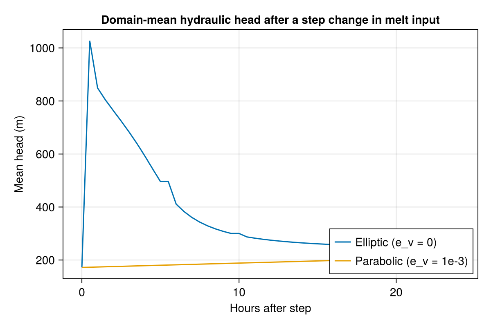
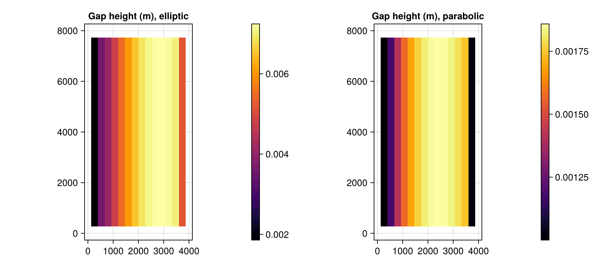

Parabolic head scheme
Every other example in this gallery uses the default EllipticHeadScheme (p.e_v == 0): each timestep, hydraulic head h is solved to full nonlinear (Picard) convergence given the current transmissivity K/gap height b – h has no memory of its own, only b carries state forward between timesteps. Setting p.e_v != 0 (a nonzero englacial storage void ratio, Sommers, Rajaram & Morlighem 2018's Eq. 13 ∂(e_v(h-zb))/∂t term) switches to ParabolicHeadScheme instead: h itself now has inertia, so it takes several timesteps to catch up to a sudden change in forcing rather than jumping there in one step. This example drives the same synthetic slab under both schemes with an identical step change in meltwater input, and compares how h responds.
using Shakti
using CairoMakie
using StatisticsGeometry, mask, and physical setup
The same synthetic slab as the Seasonal melt input example (Table 2 geometry from Sommers, Rajaram & Morlighem 2018): outlet at x=0 (LAND, Dirichlet head = 0), zero-flux elsewhere (OTHER_BASIN). No moulin here – ieb is applied uniformly, so a single domain-mean head timeseries tells the whole story.
const NX, NY = 16, 16
const LX, LY = 4000.0, 8000.0
grid = Grid(NX, NY, LX, LY)
zb = zeros(NX, NY)
H0, H1 = 550.0, 700.0
Hx = sqrt.(H0^2 .+ (H1^2 - H0^2) .* (grid.x ./ LX))
zs = repeat(Hx, 1, NY)
mask = fill(GROUNDED, NX, NY)
mask[1, :] .= LAND
mask[end, :] .= OTHER_BASIN
mask[:, 1] .= OTHER_BASIN
mask[:, end] .= OTHER_BASIN
A_visc = fill(5e-25, NX, NY)
b = fill(0.01, NX, NY)
G = fill(0.05, NX, NY)
ub_x = fill(1e-6, NX + 1, NY)
ub_y = zeros(NX, NY + 1)
sl = RegularizedCoulombSlidingLaw(0.25)
taub_x = zeros(NX + 1, NY) # unused: RegularizedCoulombSlidingLaw recomputes taub from N/ub every Picard iteration
taub_y = zeros(NX, NY + 1)
const SECONDS_PER_YEAR = 365 * 86400.03.1536e7Baseline: spin up under the elliptic scheme
p.e_v doesn't enter set_initial_conditions! at all, so a single elliptic spin-up (matching Seasonal melt input's own baseline) gives a physically sensible common starting point for both schemes below – built with elliptic rather than parabolic since Picard's nonlinear convergence, not storage-damped transients, is what "steady" should mean for a baseline.
p_base = ModelParameters(e_v = 0.0, b_min = 1e-3, omega = 1e-4)
ieb_base = fill(1.0 / SECONDS_PER_YEAR, NX, NY) # 1 m/yr distributed background melt
state0 = State(grid)
set_initial_conditions!(state0, grid, p_base, sl, mask, A_visc, zb, zs, b, G, ub_x, ub_y, ieb_base, taub_x, taub_y)
ls_spinup = CholeskyDirectSolver(grid)
ps_spinup = PicardSolver(500, 1e-6, ls_spinup, grid; alpha = 0.1)
sim_spinup = Simulation(grid, state0, 20, floattype(3600.0), p_base, "implicit", String[], ConstantMeltInput(), sl; ps = ps_spinup)
run!(sim_spinup)Step change in melt input, under both schemes
From the identical spun-up state, ieb is stepped up 20x (as if a moulin abruptly reached the bed) and both schemes are run forward with the same dt/tsteps/tolerance. p_elliptic and p_parabolic share every physical parameter except e_v.
p_elliptic = ModelParameters(e_v = 0.0, b_min = 1e-3, omega = 1e-4)
p_parabolic = ModelParameters(e_v = 1e-3, b_min = 1e-3, omega = 1e-4) # e_v has no single "correct" value in the literature; 1e-3 is a common illustrative order of magnitude
state_elliptic = deepcopy(state0)
state_parabolic = deepcopy(state0)
ieb_step = fill(20.0 / SECONDS_PER_YEAR, NX, NY)
state_elliptic.ieb .= ieb_step
state_parabolic.ieb .= ieb_step
dt, tsteps = 1800.0, 48 # 30 min steps, 1 day
tracked_obs, tracked_times = ["h", "b"], 0:tsteps
ls_elliptic = CholeskyDirectSolver(grid)
ps_elliptic = PicardSolver(500, 1e-6, ls_elliptic, grid; alpha = 0.1)
sim_elliptic = Simulation(grid, state_elliptic, tsteps, floattype(dt), p_elliptic, "implicit", tracked_obs, ConstantMeltInput(), sl;
ps = ps_elliptic, which_observer = "Live", tracked_times = tracked_times)
run!(sim_elliptic)
ls_parabolic = CholeskyDirectSolver(grid) # ParabolicHeadScheme's `ls` is a plain AbstractLinearSolver -- no Picard loop, so no PicardSolver wrapper needed
sim_parabolic = Simulation(grid, state_parabolic, tsteps, floattype(dt), p_parabolic, "implicit", tracked_obs, ConstantMeltInput(), sl;
ls = ls_parabolic, which_observer = "Live", tracked_times = tracked_times)
run!(sim_parabolic)Results
Domain-mean head over the first day: the elliptic scheme's h is fully re-converged to the new (K, ieb)-consistent balance within the very first step, while the parabolic scheme's h – now carrying its own storage – approaches that same balance gradually over several steps, the smoothing effect of a nonzero e_v.
hist_e, hist_p = sim_elliptic.observer.history, sim_parabolic.observer.history
hours = (0:tsteps) .* (dt / 3600)
h_mean_e = [mean(view(hist_e["h"], :, :, i)) for i in axes(hist_e["h"], 3)]
h_mean_p = [mean(view(hist_p["h"], :, :, i)) for i in axes(hist_p["h"], 3)]
fig_ts = Figure(size = (600, 400))
ax = Axis(fig_ts[1, 1], title = "Domain-mean hydraulic head after a step change in melt input",
xlabel = "Hours after step", ylabel = "Mean head (m)")
lines!(ax, hours, h_mean_e, label = "Elliptic (e_v = 0)")
lines!(ax, hours, h_mean_p, label = "Parabolic (e_v = 1e-3)")
axislegend(ax, position = :rb)
fig_ts
Gap height b at the end of the day: both schemes evolve b the same way (step_b! doesn't depend on the head scheme), so any difference here is second-order, purely a consequence of the slightly different h/N history each scheme produced along the way.
grounded = mask .== GROUNDED
mask_nan(field) = ifelse.(grounded, field, NaN)
fig_b = Figure(size = (900, 400))
ax1 = Axis(fig_b[1, 1], title = "Gap height (m), elliptic", aspect = DataAspect())
hm1 = heatmap!(ax1, grid.x, grid.y, mask_nan(Array(state_elliptic.b)), colormap = :inferno)
Colorbar(fig_b[1, 2], hm1)
ax2 = Axis(fig_b[1, 3], title = "Gap height (m), parabolic", aspect = DataAspect())
hm2 = heatmap!(ax2, grid.x, grid.y, mask_nan(Array(state_parabolic.b)), colormap = :inferno)
Colorbar(fig_b[1, 4], hm2)
fig_b